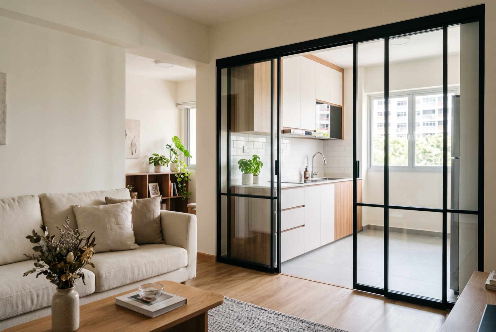

Sliding door installation in Singapore: types, cost & what to know

Planning a sliding door installation in Singapore? Short answer on cost: a kitchen-entrance slide-and-fold door typically runs S$900–2,000, larger aluminium-framed glass sliding doors and partitions run S$2,500–5,000+, and a recent RK E&C project — a large glass sliding door with aluminium frame and tempered glass, supplied and installed — came to about S$3,800. This guide walks through the common door types, when sliding beats swinging, top-hung versus bottom-rolling tracks, glass safety, and what happens between measurement and installation day.
The main sliding door types in Singapore homes
Most requests we see fall into four families, each suited to a different opening and budget:
Aluminium-framed glass sliding door
The workhorse for kitchen entrances, balconies and room partitions. Slim aluminium frames hold tempered glass panels that slide on two or three parallel tracks. Frames come in black, white, bronze or wood-grain finishes, and the glass can be clear, frosted or fluted (reeded) for privacy without losing light. This is the style most people picture when they say kitchen sliding door for an HDB flat.
Slide-and-fold door
Panels that slide along a track and fold flat against the wall, opening up almost the entire width of the doorway. Ideal where you want the option of a fully open kitchen most of the time but a sealed-off one when you're frying. Because the panels stack, slide-and-fold works in openings too narrow for two overlapping sliding panels.
Barn-style sliding door
A single solid panel — usually wood or wood-look laminate — hung from an exposed overhead track that runs along the wall face. It's a design statement more than a seal: barn doors leave gaps at the edges, so they suit studies, walk-in wardrobes and bedroom feature doorways rather than kitchens where smell containment matters.
PVC and bi-fold doors
The budget end. Lightweight PVC bi-fold or folding doors are the standard fix for service yards, kitchen-toilet entrances and utility rooms — a few hundred dollars installed, quick to replace, and resistant to the moisture that warps timber in wet areas.
When a sliding door beats a swing door
A swing door needs a clear quarter-circle of floor to operate. A sliding door needs none. That single fact drives most conversions, but there are three concrete wins:
- Space. In a typical HDB kitchen entrance or a tight corridor, the swing arc of a conventional door eats usable floor and blocks furniture placement. A sliding panel runs flat along the wall or within its own frame.
- Light. Glass sliding panels let daylight travel from the kitchen or balcony into the living area even when closed — a real difference in older flats with a single window line.
- Containing aircon and cooking smells. Close a glass sliding door across the kitchen entrance and you can wok-fry without perfuming the sofa; close it across a living-room opening and the aircon stops fighting the whole flat. It's the practical reason glass kitchen doors became the default in new HDB renovations.
The trade-off: a sliding door seals less tightly than a good swing door, and the track and rollers are moving parts that need occasional cleaning and adjustment.
Top-hung vs bottom-rolling: which track system?
Every sliding door carries its weight somewhere — either from above or below — and the choice matters more than the brochure suggests.
Top-hung doors hang from rollers in an overhead track. There is no floor rail, so nothing traps dirt at the threshold, the floor stays flush for trolleys and robot vacuums, and the glide tends to be smoother and quieter. The catch: the beam or lintel above the opening must be solid enough to take the full weight of the panels. On some HDB openings that means adding a header or choosing lighter panels.
Bottom-rolling doors rest their weight on rollers running in a floor track, with the top track only guiding the panel. This suits very heavy glass panels and openings without a strong structure overhead. The cost is a visible floor rail that collects crumbs and grit — expect to vacuum the track, and expect rollers to need adjustment sooner if the track stays dirty.
As a rule of thumb: top-hung for kitchen entrances and interior partitions where the structure allows it; bottom-rolling for heavy, wide glass spans.
What sliding doors actually cost in Singapore (2026)
Prices below are indicative of the current market. Size, glass type and frame material drive cost more than anything else — a wider opening means more panels, thicker glass and heavier hardware. Always confirm a fixed quote after an on-site measurement.
| Job | Typical price (SGD) | Notes |
|---|---|---|
| PVC / bi-fold door (service yard, kitchen toilet) | From $200 – $500 | Supply & install, standard sizes |
| Kitchen entrance slide-and-fold door | $900 – $2,000 | Aluminium frame, tempered glass |
| Glass sliding door, large opening (recent RK E&C project) | ≈ $3,800 | Supply & install, aluminium frame + tempered glass |
| Larger glass sliding partitions | $2,500 – $5,000+ | Multi-panel; price scales with width & glass |
That S$3,800 figure is worth pausing on because it's a real job, not a marketing "from" price: a large opening, custom-measured aluminium frames, tempered glass panels, delivery and a one-day installation. Smaller kitchen entrances land well under that; full-width living-room partitions with three or four panels land above it.
If the door is part of a bigger works package, see our full HDB renovation cost breakdown and the HDB kitchen renovation cost guide for how doors sit within a whole-flat budget.
Glass safety: tempered, always
Any glass door panel in a home should be tempered (toughened) safety glass. Tempered glass is heat-treated so that if it ever breaks, it crumbles into small blunt granules instead of the long shards ordinary annealed glass produces. For a panel that people walk past, lean on and occasionally walk into, that difference is the whole point.
- Look for the etched "tempered" stamp on the corner of each panel on delivery.
- Typical thickness is 8–12 mm for door panels; thicker glass is heavier and pushes you toward bottom-rolling tracks.
- Frosted or fluted finishes don't change the safety rating — the treatment is in the glass, not the surface pattern.
A reputable installer will not quote annealed glass for a door panel. If a very cheap quote doesn't say "tempered", ask why.
Measuring, lead time and installation day
Custom sliding doors are made to the opening, not bought off a shelf, so the sequence looks like this:
- Site measurement. The installer measures the opening at several points — floors and walls in older flats are rarely perfectly square, and the frame is fabricated to the real dimensions, not the floor plan.
- Confirm the spec. Frame colour, glass type, number of panels, track system and which side the panels stack or park.
- Fabrication. Typically 2–4 weeks for custom aluminium-and-glass doors. Standard-size PVC doors can be much faster.
- Installation. Usually completed within a day: mount the track, hang and align the panels, adjust the rollers, fit stoppers and seals, and clean up.
One planning note for HDB owners: fitting a door within an existing opening is straightforward, but enlarging or creating an opening counts as renovation work with its own rules — structural walls can never be hacked, and some works need a permit. When in doubt, check the renovation guidelines on the HDB website or ask your contractor to confirm before you commit to a design.
Getting it done by RK E&C
RK E&C is a Singapore-registered renovation and handyman company (UEN 202442767D). We supply and install sliding, slide-and-fold and bi-fold doors island-wide — as a standalone job or as part of a kitchen or whole-flat renovation — with on-site measurement, tempered glass as standard, and a fixed price before fabrication starts.
Send a photo of your doorway and the rough width, and we'll give you an indicative price — usually the same day.
Frequently asked questions
How much does sliding door installation cost in Singapore?
Roughly S$900–2,000 for a kitchen-entrance slide-and-fold door and S$2,500–5,000+ for larger glass sliding doors or partitions. A recent RK E&C project — a large glass sliding door with aluminium frame and tempered glass, supplied and installed — came to about S$3,800. Size, glass and frame drive the price.
Which sliding door is best for an HDB kitchen entrance?
A slide-and-fold or aluminium-framed glass sliding door. It contains cooking smells and aircon while letting light through, and needs no swing clearance. PVC bi-fold doors are the budget pick for the service yard or a toilet within the kitchen.
Should I choose a top-hung or bottom-rolling door?
Top-hung if the structure above the opening can carry the weight — no floor rail, smoother glide, easier cleaning. Bottom-rolling for very heavy panels or openings without a solid header, accepting a floor track that needs regular vacuuming.
Does the glass need to be tempered?
Yes. Every glass door panel should be tempered safety glass, which breaks into small blunt granules rather than shards. Check for the etched stamp on each panel at delivery.
How long does the whole process take?
Measurement to installation is typically 2–4 weeks, almost all of it fabrication time for the custom frame and glass. The installation itself is normally done within a day.
Do I need HDB approval?
Not for fitting a door within an existing opening. If the job involves hacking or forming a new opening, HDB renovation rules apply — structural walls must never be touched. Confirm against the current guidelines on the HDB website before finalising your design.
Thinking about a sliding door?
Send us a photo of your doorway and the rough width. Fixed-price quote, tempered glass and installation included, island-wide.
Prices are indicative of the Singapore market in 2026 and not a quotation. Confirm a fixed price with your provider before work begins.